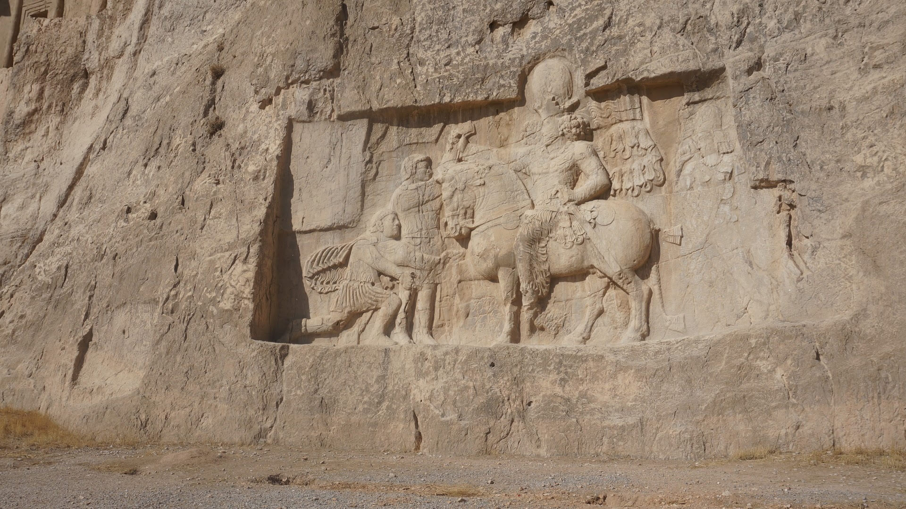

穿过沙漠、高山，经历了大巴在野外抛锚，我们又是临到夜晚到了设拉子。设拉子的繁华程度堪与德黑兰相比，街边皆是灯火，但似乎人们见识更多，所以在德黑兰走百米之内必有人说“Hello”的情况并未发生。
设拉子的酒店价格也是不菲，昂贵的一晚也要1000刀，对于穷鬼一个的我来说实在是肉痛，我们住在一家有彩玻璃的民宿里，Parhami Traditional House, 二层房子，屋顶是天台花园，中庭有休息的坐榻，和蓝色可爱的的小水池。在设拉子我们终于“奢侈”了一把，选择了包车前往萨珊帝陵和波斯波利斯，当然，如果不包车，对于语言不通的外国人显然无法抵达距城60公里的景区。
居鲁士墓在一片旷野中，雄伟沉默的矗立。居鲁士的功绩可比我们的秦始皇，一统两河流域几乎所有文明，征服了巴比伦，他的统治已经延伸到了印度河流域。“我，居鲁士，阿契美尼德宗室，万王之王。” 心中默念，但觉雄浑。经过几千年风雨和战争，帝陵的地面建筑，祭祀的神庙几乎毁灭殆尽，唯有沉默的山川在守护着昔日的英灵。
在阿契美尼德时期，波斯人信仰的是琐罗亚斯德教，信仰至高神——阿胡拉·马自达。琐罗亚斯德教是主张人死后不要污染神圣的风水火土，最好是能经历天葬，达到自然界的生死轮回，可惜人必有私欲，帝王不就是希望死后自己的功勋与神名能万古流芳，为人所景仰么，所以萨珊帝国的帝王们还是耗费了大量的人力物力依山开凿陵墓，并在山上流下了大量的浮雕，歌颂自己的文治武功，例如打败了罗马人让罗马皇帝为之牵马。在古代这种行为也是一种彰显国力的方式，以非战的手段威吓四邻。

波斯波利斯也只剩下了断壁残垣。但即使从一个百柱宫残余的石柱，万国门一个不起眼的浮雕，也让人叹服当年波斯让万国来朝的鼎盛。亚历山大大帝的一把火彻底带走了这段伟大的辉煌。
最后一天我们起了个大早，打算在中午飞机之前，去看看粉红色清真寺，粉红清真寺就在我们所住旅社的街对面，一大早就人流熙攘，入耳净是乡音，“诶我这个姿势拍吧”、“姑娘你不拍让一下”。彩色玻璃光线确实不错，可惜镜头中竟然难寻一片无人的净土，四周也弥漫着奇怪的脚臭。我们不到半小时就狼狈的逃离了这个充斥着老乡的热闹清真寺。
尾声——回程
回德黑兰的时候，我们难得体验了一次传说中的伊朗国内段飞机。据说由于经济制裁多年，飞机设施陈旧，安全状况堪忧，可是我们由于时间精力上的考虑还是精心选择了伊朗唯一一家国际航空公司，马汉航空。乍着胆子坐上去，飞机爬升的过程中出现了好几次猛然下沉，我一颗心沉甸甸，感觉胃都蜷缩了起来，后排有几位女士忍不住哭了，机长广播一再声明飞机没有问题，会安全到达。当然，我们最终还是安全到达了德黑兰。
距离凌晨离开伊朗的航班还有十个小时，于是抓紧时间再去市内逛了一逛，晚饭去了一家别致的小馆子，全是本地客人，很多人在抽水烟，吞云吐雾。伊朗的网络被限制的很严重，网速慢不说，国外的社交网站，国内的知乎果壳，甚至朋友圈均被屏蔽了，领袖禁止民间世俗的娱乐活动，连芭比娃娃也遭到了封杀，漫漫长夜，百无聊赖，苦闷的年轻人就开始聚集在烟馆里抽水烟。
好奇心痒之下，我们点了橘子味的水烟。但是由于技术不过关，呛到眼泪横流也只像金鱼一样吐了一个泡泡，隔壁的小姐姐看着我们乐，还跑过来帮我们吸了好几口，教我们怎么吹。我们甚至用Google 翻译结识了一位在石油公司工作的小姐姐，虽然机器翻译经常鸡同鸭讲，但是还是帮助我们度过了一段愉快的时光。
进入机场安检过后，我一把掀掉了头巾，仿佛灵魂也得到了解脱，长舒了一口气。
最后放一张自己作为回忆的终结。
❤︎